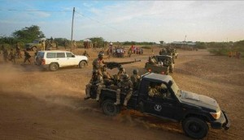

khatumo.net archive
Somaliland Militia attacks Sah-dheer and Dharkayn, killing dozens of local SSC Khatumo residents
By A Hindi
June 15, 2014

Since the terror and military incursion into Taleh City on June 12, 2014 by Somaliland Army, violence continued in the towns of Sahdheer, Dharkayn, Xingalol, and Qoriley. On the early morning of Friday June 13th, these traditionally peaceful Khatumo towns have woken up to the sounds of artillery and heavy machine guns.Reports indicate that on the outskirts of Sahdher town approximately 40 people have been killed in clashes between Khatumo and Somaliland forces. located about 131 KM from Taleh, Sahdheer is the Home town of Graad Jama G. Ali_ the overall Traditional leader of the local people of Sool Sanaag and Cayn regions. Somaliland claims that they have killed 15 khatumo fighters and captured one military vehicle while the Khatumo military claims the overall victory as they have successfully defended the town of Sahdher killing at least 21 Somaliland forces.
According to Abdullahi Jama, a local resident of Saahdheer, the Khatumo army has captured at least two vehicles and he has seen a least a dozen people dead from the Somaliland side. “We have no place to go or run to, our fore-fathers have fought the colonials hundreds of years ago in these Historical Dervish towns. we have lived here all our lives_ Taleh, Dharkayn and Sahdheer, which is located just a few meters from our Border with Ethiopia. We have got our backs agains the wall, you know… we have no choice but to defend ourselves, our property, our water basins, and camel and sheep” continued Mr. Jama.
This renewed fighting comes on the eve of Somaliland’s illegal incursion into the city of Taleh _ the Provisional Capital of Khatumo State of Somalia. Upon news of invasion by Somaliland forces, Garaad Jama along with Khatumo President Mohamed Yusuf Indho-sheel, former Somali Prime Minister Ali Khalif and other dignitaries have all vacated Taleh in order to avoid military clashes and loss of civilian casualties.
Khatumo State condemns these barbaric attacks by Somaliland which is on a hunt to ethnic-cleanse and grab more Khatumo lands such as the city of Taleh where their army is engaged in human rights violations including terrorism, coercion and intimidation. Here, Local khatumo residents continue to demonstrate for the second day demanding the full withdrawal of the Somaliland forces.
Earlier in April, 2014, Somaliland was forced to withdraw its forces from the Taleh due to political pressures from the International Community including the Ethiopian government, EU, US, the British and Somali Government. So why did they come back now ! Somaliland claims that they entered into Taleh to disrupt the khatumo III Conference which is aligned with the Unionist principals of Somalia’s Federal Government in Mogadishu; something that Somaliland opposes because of their Secessionist ideology.
Additionally, there are reports that Puntland administration have condemned these attacks in Taleh and Sahdheer, asking the International community to force Somaliland to withdraw from “their” land. Apparently, Taleh_a Khatumo Provisional Capital is also claimed by Puntland as their territory, albeit with zero military defense of Taleh as was the case in Lasanod in 2007. Manufactured or otherwise, It is interesting how an administration that has Members of its Parliament Representing Sool and Taleh city refuses to defend their jurisdictions.
This is a Somali regional politicking conundrum that the UN’s Political Office for Somalia has to resolve. UNSOM’s Head Mr. Nicholas Kay had supported last year’s local Electons in Puntland, tacitly endorsing the 17 Members of Parliament who hail from Khatumo’s Sool region including Puntland’s Vice President. However, Lasanod and Taleh’s capture yesterday by Somaliland will defenitely delegitimize these 17 Puntland MP’s who hail from the Sool and Taleh as they will have no constituency, region, land or people to legally represent. This renders these MP’s as ficticious characters used and manipulated by their Traditional Chief (Graad) to be sold to the highest bidder; once in the name of “Saving Puntland” and perhaps today in the interest of “advancing Somaliland cause” and or crashing Khatumo III.
It is time that Mr. Nicholas Kay sees these 17 MP’s as not legal reps. from Puntland or Somaliland because they can’t be representing both Puntland and Somaliland; predatory administrations, A Secessionist and a quizi Federalist united in their perpetual attacks of the only true Unionist_ Somali-Khatumo Administration. Come and attend Mr. Kay the Khatumo III conference _ soon to be held somewhere in SSC region and see how the majority of the “Locals” democratically elect and choose Khatumo Administraton.
A. Hindi
admin@khatumo.net
This article may not be copied or reproduced without the written consent of www.khatumo.net except if you are a member of Khatumo Journalists Association (KHAJA) in which case you have full permission.